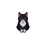
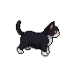
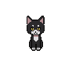
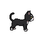
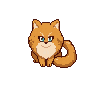
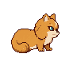
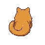
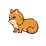

Both cats — current best of each
🖤 Tuxedo — still choosing: ① original skinny vs ② v3 skinnier + big head

① skinny · south

① skinny · east

② big-head · south

② big-head · east
🧡 Orange — v2b, very-long-hair fluff (much fluffier than the first)

south

east

north

west